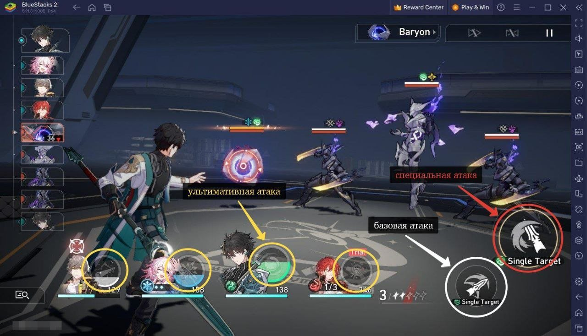

🚂 Сюжет
Главного героя (или героиню) зовут Первопроходец. В ходе неизвестного нам события он оказывается на грани жизни и смерти, из-за чего его бывшие соратники принимают рискованное решение — вживить в его тело частичку «Стелларона», крайне опасной и непонятной силы, что способна уничтожать целые планеты.
После этого нашего персонажа находят на остатках космического корабля ещё два главных героя — Март 7 (девочка, найденная во льду и не помнящая, кто она) и Дань Хэн (беженец с Лофу Сяньчжоу с тёмным прошлым). После встречи с ними нас принимают в организацию под названием «Звёздный экспресс».
Экипаж «Звёздного экспресса» — 6 членов, включая нас
- Химеко
- Вельт
- Дань Хэн
- Март 7
- Пом-Пом
- Мы — Первопроходец
Планеты, олицетворяющие разные страны нашего мира
- Белобог Россия
- Лофу Сяньчжоу Китай
- Пенакония Англия / Франция
- Амфореус Греция
- Планакардия Япония
Вместе с экипажем мы путешествуем по этим планетам и спасаем их от разных бедствий, будь то тот же самый Стелларон, чокнутое правительство или Игры Эонов — местных космических богов.
⚔️ Геймплей
- Пошаговые сраженияСистема близка к боёвке в JRPG: персонажи игрока и противники действуют поочерёдно. У каждого героя есть обычная атака, особое умение и сверхспособность.
- Исследование локацийИгроки перемещаются между различными мирами и космическими станциями, решают головоломки, сражаются с противниками и боссами. Локации коридорные, новые открываются по мере прохождения сюжета, а предыдущие остаются доступными для повторного посещения.
- Сбор командыМожно собрать команду из четырёх персонажей с уникальными умениями. Укрепляются узы между героями, что позволяет получать новые навыки и раскрывать их потенциал.
- ПрокачкаРазвиваются не только персонажи, но и их пассивные и активные навыки, а также система экипировки.
